说明：本次实验是需要8台虚拟机的项目 其架构如下图：
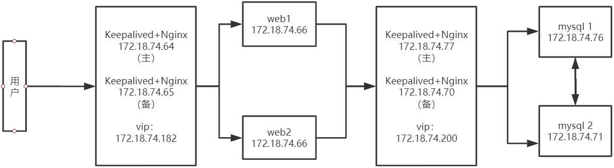
简介
keepalived是一个类似于layer3, 4 & 5交换机制的软件，也就是我们平时说的第3层、第4层和第5层交换。Keepalived是自动完成，不需人工干涉。
Layer3,4,5工作在IP/TCP协议栈的IP层，TCP层，及应用层,原理分别如下：
Layer3：Keepalived使用Layer3的方式工作式时，Keepalived会定期向服务器群中的服务器发送一个ICMP的数据包（既我们平时用的Ping程序）,如果发现某台服务的IP地址没有激活，Keepalived便报告这台服务器失效，并将它从服务器群中剔除，这种情况的典型例子是某台服务器被非法关机。Layer3的方式是以服务器的IP地址是否有效作为服务器工作正常与
否的标准。
Layer4:如果理解了Layer3的方式，Layer4就容易了。Layer4主要以TCP端口的状态来决定服务器工作正常与否。如web server的服务端口一般是80，如果Keepalived检测到80端口没有启动，则Keepalived将把这台服务器从服务器群中剔除。
Layer5：Layer5对指定的URL执行HTTP GET。然后使用MD5算法对HTTP GET结果进行求和。如果这个总数与预期值不符，那么测试是错误的，服务器将从服务器池中移除。该模块对同一服务实施多URL获取检查。如果您使用承载多个应用程序服务器的服务器，则此功能很有用。此功能使您能够检查应用程序服务器是否正常工作。MD5摘要是使用genhash实用程序（包含在keepalived软件包中）生成的。
Nginx作为负载均衡服务：Nginx 既可以在内部直接支持 Rails 和 PHP 程序对外进行服务，也可以支持作为 HTTP代理服务对外进行服务。Nginx采用C进行编写，是一款高性能的反向代理服务器。
环境说明
虚拟机数量：四台
操作系统：全部是centos7.3
keepalived版本：keepalived-2.0.7
nginx版本：nginx-1.14.0
| 主机名称 | 安装软件 | ip地址 |
|---|---|---|
| keepalived_web_m | keepalived+nginx | 172.18.74.64 |
| keepalived_web_s | keepalived+nginx | 172.18.74.65 |
| web1 | Apache | 172.18.74.66 |
| web2 | Apache | 172.18.74.69 |
环境安装
首先关闭所有机器的防火墙和selinux，配置好之后我们开启，然后添加策略。
systemctl stop firewalld
setenforce 0
安装nginx
首先下载并解压需要的包
wget http://www.zlib.net/zlib-1.2.11.tar.gz
tar -zxvf zlib-1.2.11.tar.gz
wget https://jaist.dl.sourceforge.net/project/pcre/pcre/8.41/pcre-8.41.tar.gz
tar -zxvf pcre-8.41.tar.gz
wget https://www.openssl.org/source/openssl-1.0.2o.tar.gz
tar -zxvf openssl-1.0.2o.tar.gz
wget http://labs.frickle.com/files/ngx_cache_purge-2.3.tar.gz
tar -zxvf ngx_cache_purge-2.3.tar.gz
wget http://nginx.org/download/nginx-1.14.0.tar.gz
tar -zxvf nginx-1.14.0.tar.gz
进入nginx目录
cd nginx-1.14.0
配置安装选项
./configure --add-module=../ngx_cache_purge-2.3 --prefix=/usr/local/nginx --with-http_ssl_module --with-stream --with-pcre=../pcre-8.41 --with-zlib=../zlib-1.2.11 --with-openssl=../openssl-1.0.2o
通过/usr/local/nginx配置项可以知道主要生效配置文件在此文件夹中
编译并安装
make&&make install
先备份一份nginx配置文件
cd /usr/local/nginx/conf
cp nginx.conf ./nginx.conf.bak
修改nginx.conf的配置
vim nginx.conf
修改红框里的内容
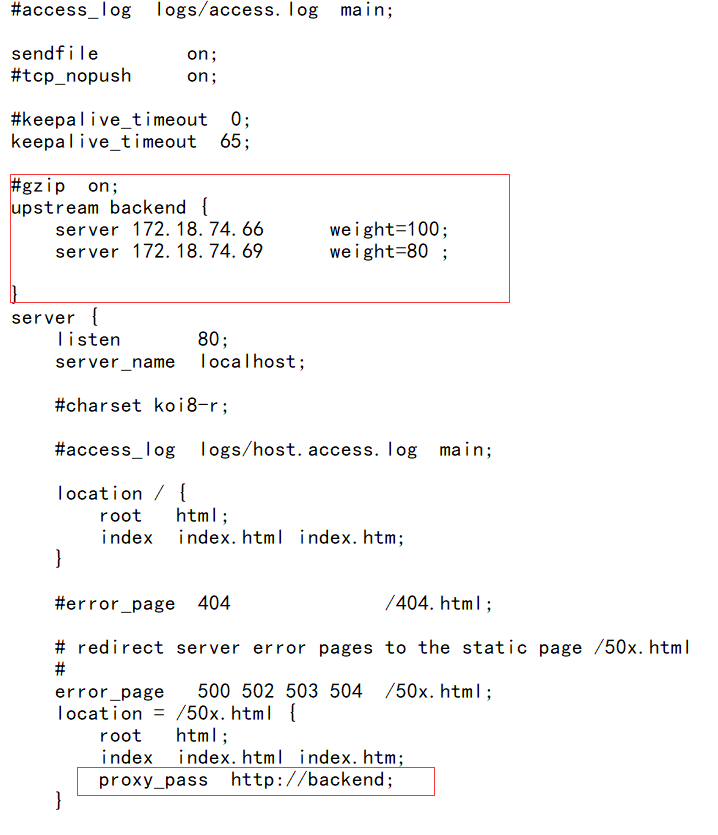
保存退出，然后在sbin目录重新加载nginx
./nginx -s reload
下载并安装keepalived
yum install wget make gcc gcc-c++ openssl-devel
wget http://www.keepalived.org/software/keepalived-2.0.7.tar.gz
tar zxvf keepalived-2.0.7.tar.gz
cd keepalived-2.0.7
./configure --prefix=/data/keepalived
如果报以下警告：
WARNING - this build will not support IPVS with IPv6. Please install libnl/libnl-3 dev libraries to support IPv6 with IPVS.
不用担心，我们只需要用到VRRP功能，不需要用IPVS功能，所以请确保以下三项是yes就行了。
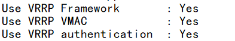
编译并安装
make&&make install
将keepalived 以服务方式启动
创建/etc/keepalived目录并把keepalived的配置文件拷贝/etc/keepalived目录下并加入到开机启动。
mkdir /etc/keepalived
cp /data/keepalived/etc/keepalived/keepalived.conf /etc/keepalived/ \
systemctl enable keepalived
修改keepalived配置文件
1 | ! Configuration File for keepalived |
备主机里的keepalived配置
1 | ! Configuration File for keepalived |
添加检查nginx状态的脚本
1 | !/bin/bash |
重启keepalived
systemctl restart keepalived
输入命令ip a查看是否有vip
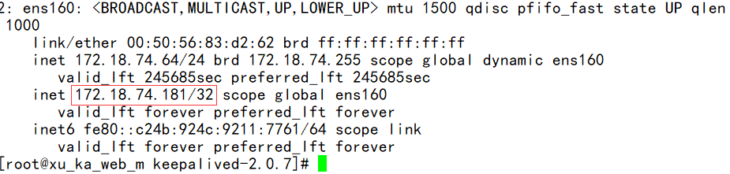
keepalived+nginx+apache+mysql实现高可用、负载均衡的网站
然后关闭master的keepalived
systemctl stop keepalived
查看backup上是否有vip
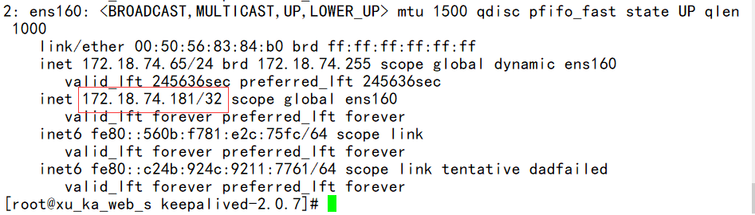
有说明配置成功
没有说明keepalived.conf存在问题
安装apache服务器
在两台web服务器上安装apache服务
yum install -y httpd
打开服务
systemctl start httpd
编辑默认页面
cd /var/www/html/
vim index.html
1 | <html lang="en"> |
同样在web2里安装apache并修改index.html
1 | <html lang="en"> |
通过浏览器访问vip
可以看到web1的页面，再次刷新会出现web2的页面
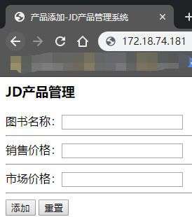
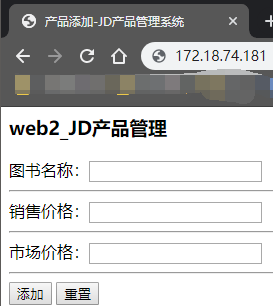
因为在nginx的配置为你教案中设置的web1和web2的权重为100：80
所以每访问180次会出现100次web1，80次web2
keepalived+nginx+apache+mysql实现高可用、负载均衡的网站-下
报错指南:
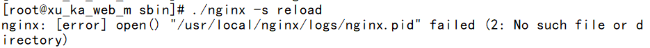
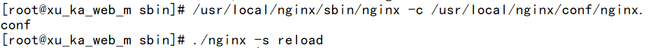
原因
未使用nginx -c的参数指定nginx.conf文件的位置
解决
/usr/local/nginx/sbin/nginx -c /usr/local/nginx/conf/nginx.conf 执行
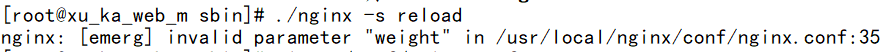
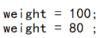
不能加空格